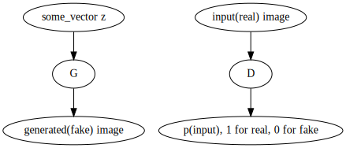
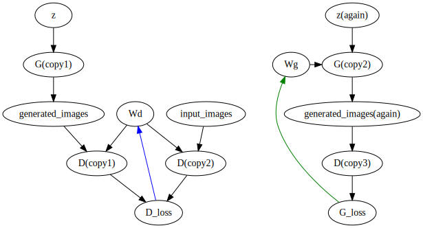
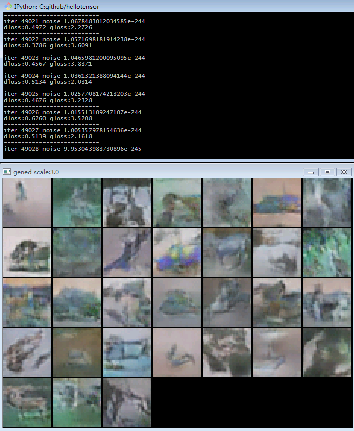

Fast DCGAN in Keras
DCGAN have been implemented in a lot of frameworks. However, existing Keras and Tensorflow implementations are SLOW due to duplicated computation.
Here's the GAN concept:
And here's the optimal GAN training architecture:

Basically we want to do two things in one forward-backward pass:
- update Wd w.r.t. D_loss
- update Wg w.r.t. G_loss
This kind of update(different parameters w.r.t. different loss) however is not possible in Keras.
but possible in Torch - check soumith/dcgan.
So the dumb solution was to create two model, one updates Wd after its forward-backward pass, another updates Wg after its forward-backward pass.
That worked, but unfriendly to our precious computational resources.
To apply two different parameter updates in one forward-backward pass, you will need to write your own update code in raw Tensorflow. Here's how:
-
Create D and G network in Keras, as usual;
-
Write your parameter update operations by hand:
# noise: the input z # real_image input noise = Input(shape=g.input_shape[1:]) real_image = Input(shape=d.input_shape[1:]) # dm and gm are your generative and discriminative network. generated = gm(noise) # dm should produce a score between (0,1) remember? gscore = dm(generated) rscore = dm(real_image) def log_eps(i): return K.log(i+1e-11) # calculate the losses # single side label smoothing: replace 1.0 with 0.9 for real input dloss = - K.mean(log_eps(1-gscore) + .1 * log_eps(1-rscore) + .9 * log_eps(rscore)) gloss = - K.mean(log_eps(gscore)) Adam = tf.train.AdamOptimizer lr,b1 = 1e-4,.2 # otherwise won't converge. optimizer = Adam(lr,beta1=b1) # update Wd w.r.t. D_loss grad_loss_wd = optimizer.compute_gradients(dloss, dm.trainable_weights) update_wd = optimizer.apply_gradients(grad_loss_wd) # update Wg w.r.t G_loss grad_loss_wg = optimizer.compute_gradients(gloss, gm.trainable_weights) update_wg = optimizer.apply_gradients(grad_loss_wg) -
instead of using
model.fit(), run the parameter update by hand:train_step = [update_wd, update_wg, other_parameter_updates] sess.run(train_step,feed_dict={noise,real_image.......})
The full code is available at https://github.com/ctmakro/hellotensor/blob/master/lets_gan_clean.py.
Here's the code running on a GTX 1060:
